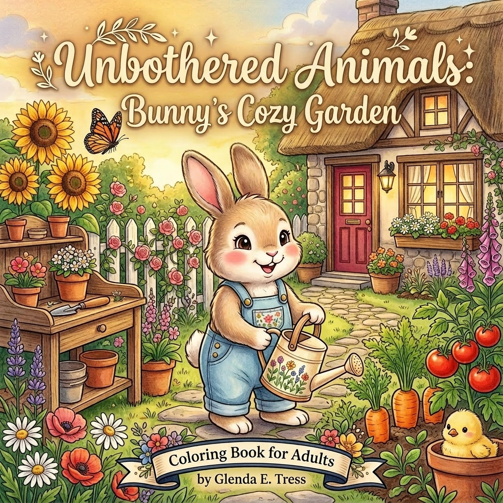
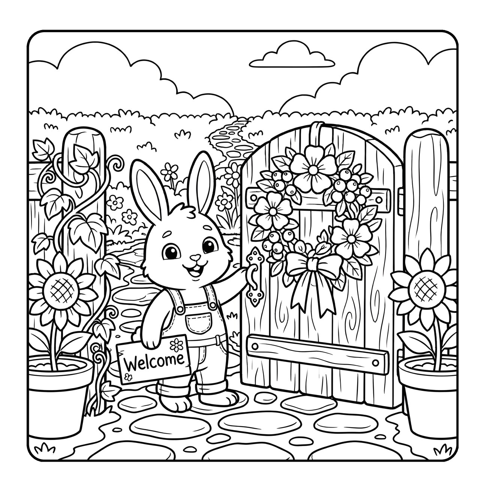
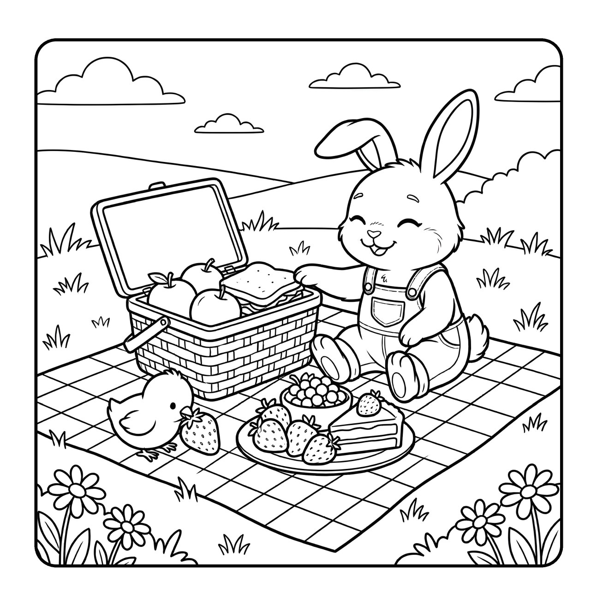
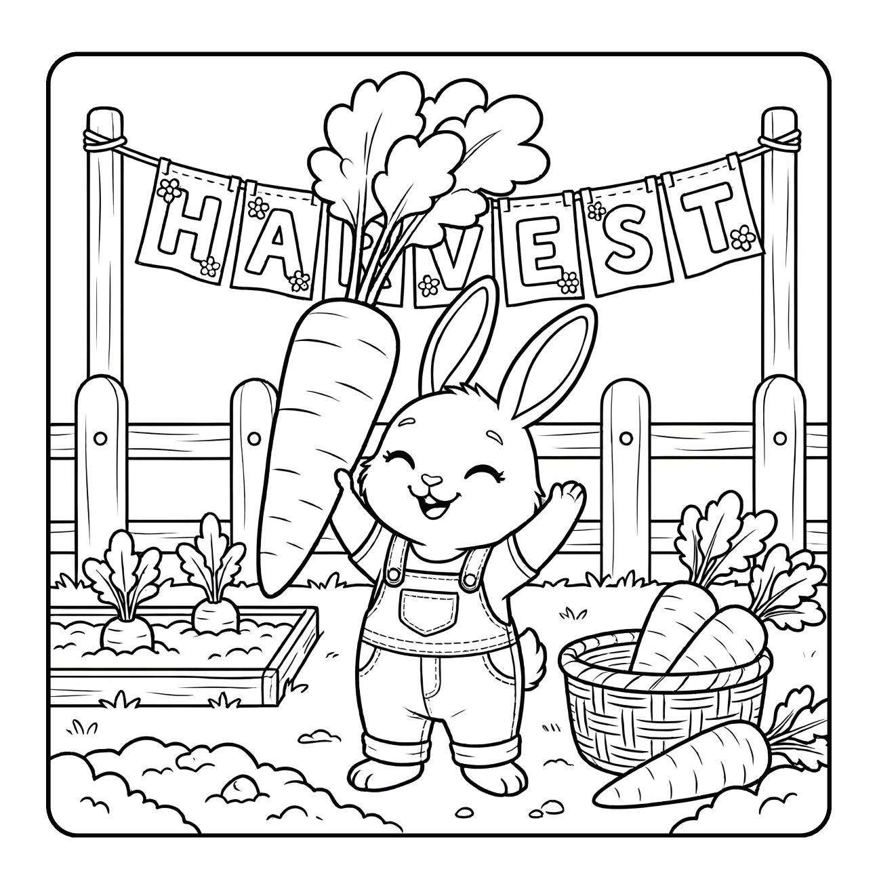
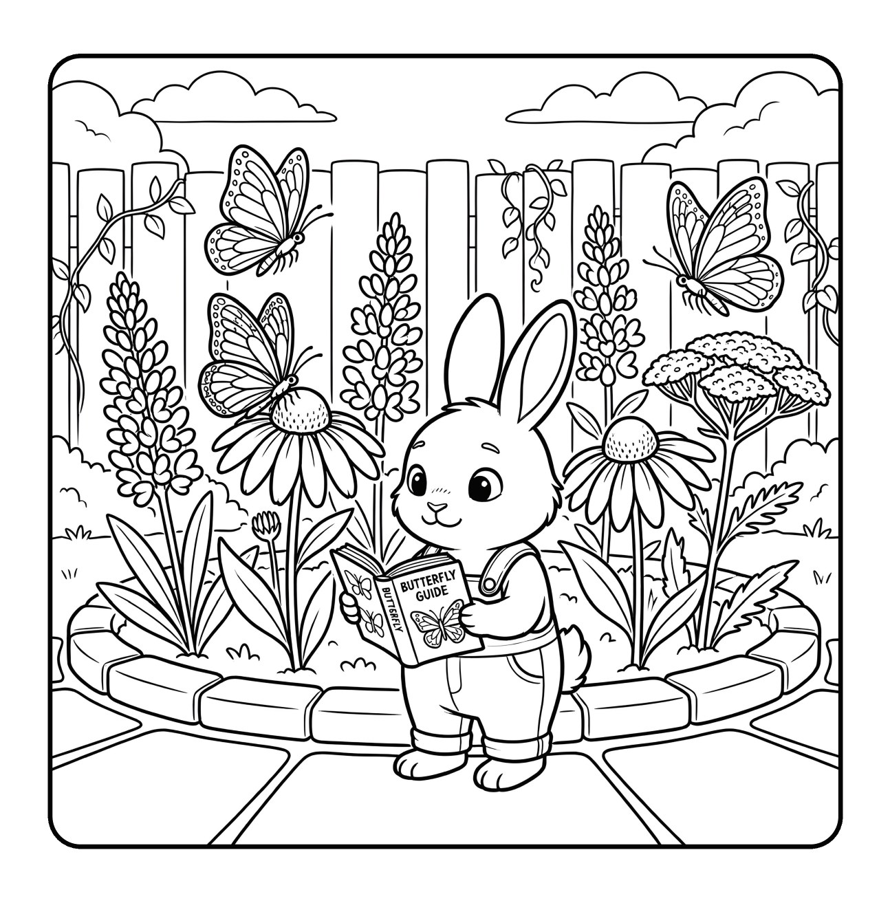
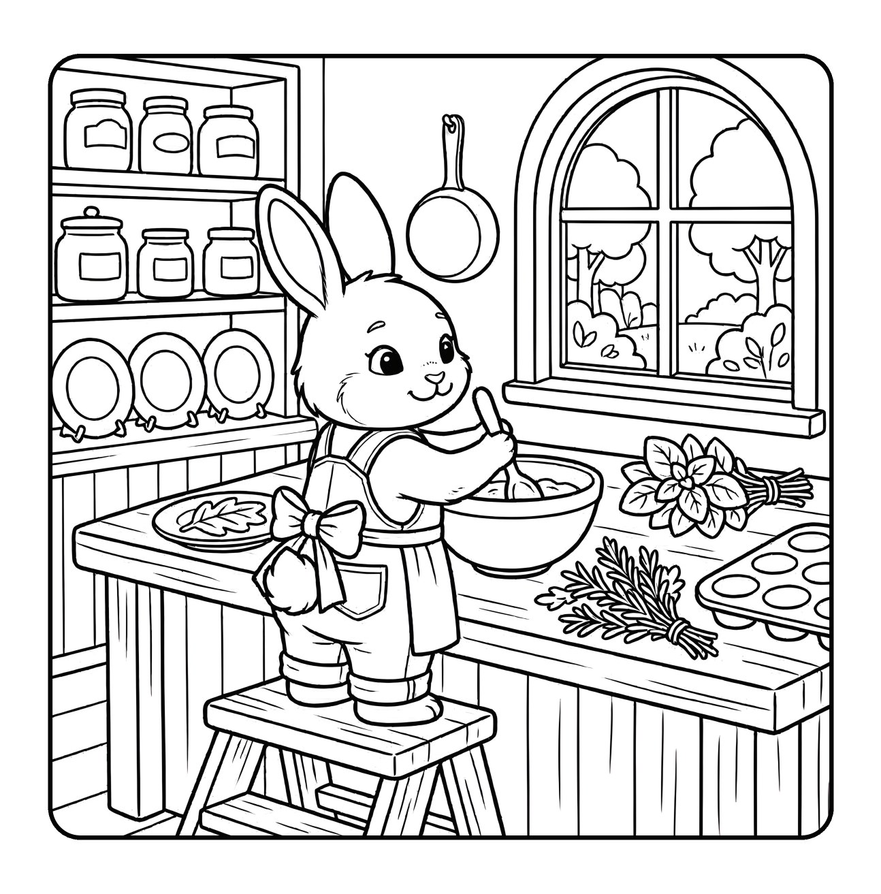
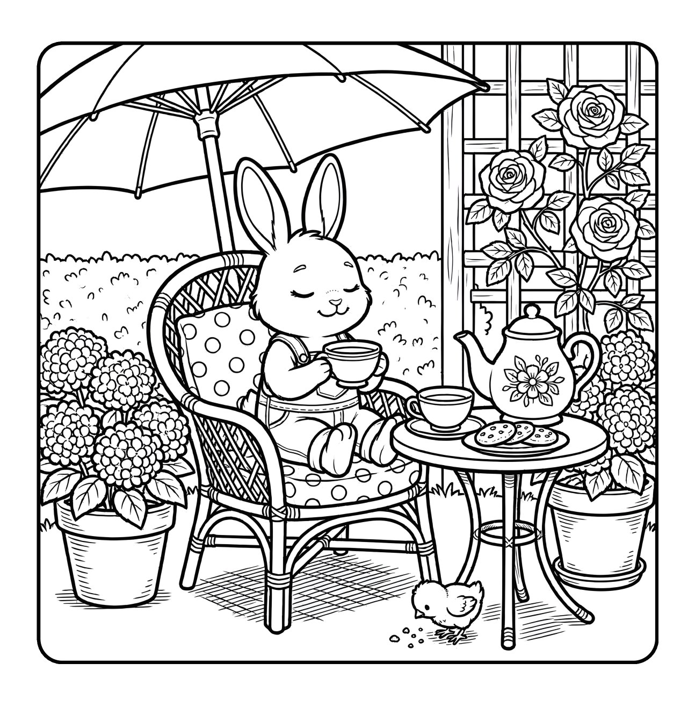

The Unbothered Animals Collection
A cheerful little garden
where every day blooms gently.
Meet Bunny—a happy little gardener who knows that flowers, fresh air, a warm cup of tea, and time to create can brighten any day.
Available now · A cheerful garden coloring escape

A cheerful coloring book · by Glenda E. Tress
The garden gate is open.
Let something lovely grow.
Follow Bunny through a bright collection of cottage-garden moments: welcoming visitors, tending flowers, gathering vegetables, painting in the meadow, baking in the kitchen, and pausing for tea among the roses.
Flowers, harvests, picnics, and cozy cottage rituals.
Room to color each page at your own pace.
For gardeners, bunny lovers, and anyone craving a gentle pause.
A little something to begin with
Eight cozy pages.
Completely free.
Settle in with a printable sampler drawn from four of Glenda’s gentle coloring worlds—including two pages from Bunny's Cozy Garden.
- Eight printable coloring pages
- Four cozy coloring-book collections
- Delivered to your inbox
Inside the book
Little moments.
Growing brightly.
Clean linework, rounded characters, flowers, and familiar garden rituals make every page feel welcoming and playful.






A brighter sort of afternoon
“A cheerful escape into a garden that is always in bloom.”
Open the window. Choose your colors. Let Bunny lead you somewhere warm, welcoming, and wonderfully unhurried.
Find the full book